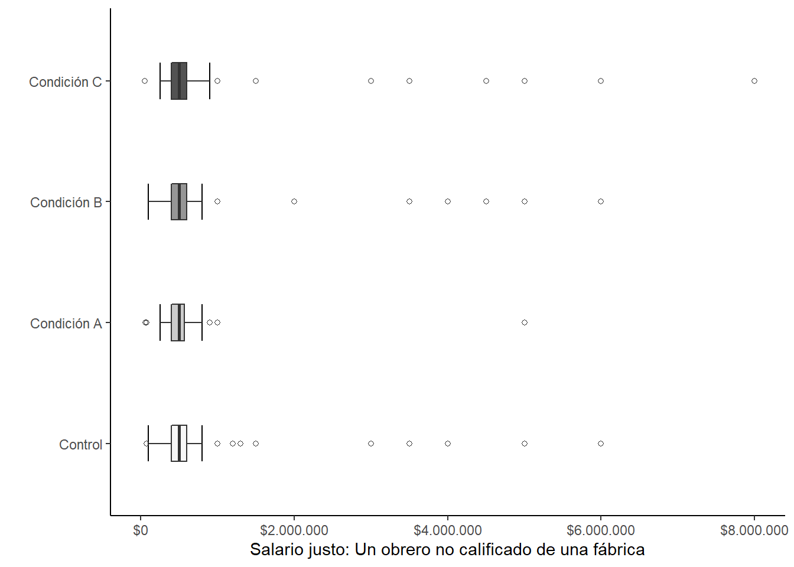
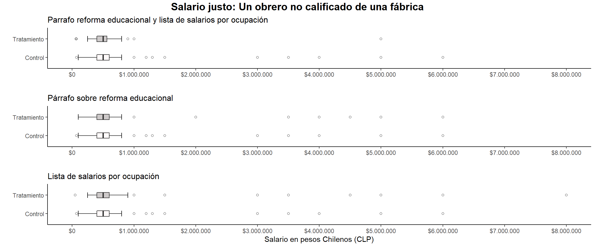
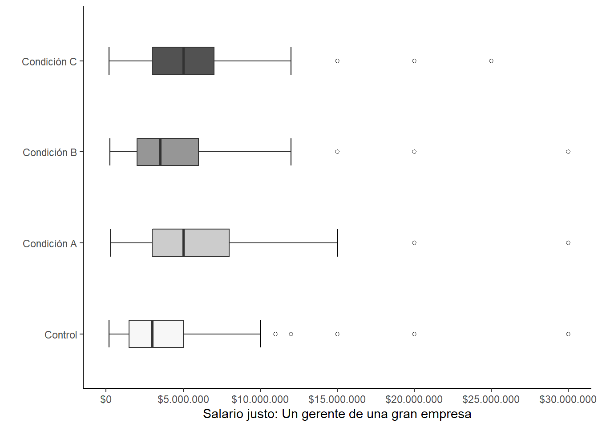
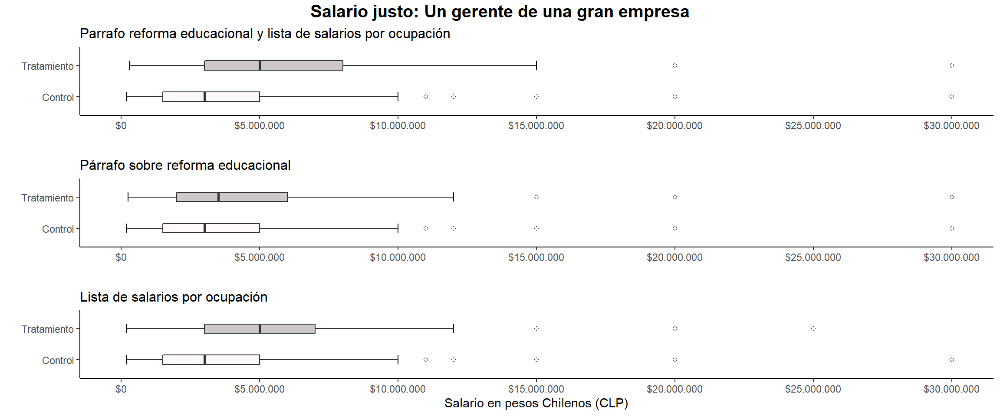

Analysis
martes 08 septiembre 2020 20:07:13
library(ggplot2) # Create Elegant Data Visualisations Using the Grammar of Graphics
library(jtools) # Analysis and Presentation of Social Scientific Data
library(grid) # The Grid Graphics Package
library(gridExtra) # Miscellaneous Functions for "Grid" Graphics
library(scales) # Scale Functions for Visualization
library(knitr) # A General-Purpose Package for Dynamic Report Generation in R
library(RItools) # Randomization Inference Tools
library(texreg) # Conversion of R Regression Output to LaTeX or HTML Tables
library(lavaan) # Latent Variable Analysis
library(sjPlot) # Data Visualization for Statistics in Social Science
library(psych) # Procedures for Psychological, Psychometric, and Personality Research
library(corrplot) # Visualization of a Correlation Matrix
library(stargazer) # Well-Formatted Regression and Summary Statistics Tables
library(dplyr) # A Grammar of Data Manipulation
library(psychTools) # Tools to Accompany the 'psych' Package for Psychological Research
library(sandwich) # Robust Covariance Matrix Estimators
library(lmtest) # Testing Linear Regression Models
library(estimatr)
library(summarytools) # Tools to Quickly and Neatly Summarize Dataload("input/data/proc/st.a_mmsinout.Rdata")
load("input/data/proc/st.b_mmsinout.Rdata")
load("input/data/proc/st.c_mmsinout.Rdata")
load("input/data/proc/st_a-sinout.Rdata")
load("input/data/proc/st_b-sinout.Rdata")
load("input/data/proc/st_c-sinout.Rdata")print(dfSummary(st, headings = FALSE,varnumbers = F),method = "render",max.tbl.height = 500)| Variable | Label | Stats / Values | Freqs (% of Valid) | Graph | Valid | Missing | ||||||||||||||||||||||||||||||||||||||||||||||||||||||||||||
|---|---|---|---|---|---|---|---|---|---|---|---|---|---|---|---|---|---|---|---|---|---|---|---|---|---|---|---|---|---|---|---|---|---|---|---|---|---|---|---|---|---|---|---|---|---|---|---|---|---|---|---|---|---|---|---|---|---|---|---|---|---|---|---|---|---|---|
| COR [numeric] | Correlativo | Mean (sd) : 524.3 (530.6) min < med < max: 1 < 430.5 < 8222 IQR (CV) : 448.5 (1) | 731 distinct values |  |
732 (100%) | 0 (0%) | ||||||||||||||||||||||||||||||||||||||||||||||||||||||||||||
| treat [factor] | Condición Tratamiento | 1. D: control 2. A: parrafo-salarios 3. B: parrafo 4. C: salarios |
|
 |
732 (100%) | 0 (0%) | ||||||||||||||||||||||||||||||||||||||||||||||||||||||||||||
| treat_a [factor] | A: parrafo-salarios | 1. 0 2. 1 |
|
 |
330 (45.08%) | 402 (54.92%) | ||||||||||||||||||||||||||||||||||||||||||||||||||||||||||||
| treat_b [factor] | B: parrafo | 1. 0 2. 1 |
|
 |
374 (51.09%) | 358 (48.91%) | ||||||||||||||||||||||||||||||||||||||||||||||||||||||||||||
| treat_c [factor] | C: salarios | 1. 0 2. 1 |
|
 |
480 (65.57%) | 252 (34.43%) | ||||||||||||||||||||||||||||||||||||||||||||||||||||||||||||
| saljusger [numeric] | Salario justo: Un obrero no calificado de una fábrica | Mean (sd) : 692796.2 (930393.7) min < med < max: 35000 < 500000 < 8000000 IQR (CV) : 200000 (1.3) | 43 distinct values |  |
726 (99.18%) | 6 (0.82%) | ||||||||||||||||||||||||||||||||||||||||||||||||||||||||||||
| saljusobr [numeric] | Salario justo: Un gerente de una gran empresa | Mean (sd) : 7297638.9 (23792056.3) min < med < max: 100000 < 5000000 < 550000000 IQR (CV) : 5000000 (3.3) | 46 distinct values |  |
720 (98.36%) | 12 (1.64%) | ||||||||||||||||||||||||||||||||||||||||||||||||||||||||||||
| perc [numeric] | Brecha salarial percibida global | Mean (sd) : 93.2 (902.7) min < med < max: 1 < 32 < 24000 IQR (CV) : 30 (9.7) | 202 distinct values |  |
720 (98.36%) | 12 (1.64%) | ||||||||||||||||||||||||||||||||||||||||||||||||||||||||||||
| reco [numeric] | Brecha salarial justa global | Mean (sd) : 25.4 (52.8) min < med < max: 1 < 12.5 < 550 IQR (CV) : 14.7 (2.1) | 129 distinct values |  |
726 (99.18%) | 6 (0.82%) | ||||||||||||||||||||||||||||||||||||||||||||||||||||||||||||
| pdesi [numeric] | P33_7 Las diferencias de ingresos en Chile son demasiado grandes | Mean (sd) : 4.4 (0.9) min < med < max: 1 < 5 < 5 IQR (CV) : 1 (0.2) |
|
 |
725 (99.04%) | 7 (0.96%) | ||||||||||||||||||||||||||||||||||||||||||||||||||||||||||||
| jw1 [numeric] | P30_1 Siento que el mundo trata a las personas injustamente | Mean (sd) : 3.3 (1.4) min < med < max: 1 < 4 < 6 IQR (CV) : 2 (0.4) |
|
 |
715 (97.68%) | 17 (2.32%) | ||||||||||||||||||||||||||||||||||||||||||||||||||||||||||||
| jw2 [numeric] | P30_2 Siento que las personas obtienen lo que merecen | Mean (sd) : 2.9 (1.5) min < med < max: 1 < 3 < 6 IQR (CV) : 3 (0.5) |
|
 |
722 (98.63%) | 10 (1.37%) | ||||||||||||||||||||||||||||||||||||||||||||||||||||||||||||
| jw3 [numeric] | P30_3 Siento que las personas reciben las recompensas y castigos que merecen | Mean (sd) : 2.8 (1.5) min < med < max: 1 < 3 < 6 IQR (CV) : 3 (0.5) |
|
 |
716 (97.81%) | 16 (2.19%) | ||||||||||||||||||||||||||||||||||||||||||||||||||||||||||||
| jw4 [numeric] | P30_4 Siento que los esfuerzos de las personas son reconocidos y recompensados | Mean (sd) : 2.7 (1.6) min < med < max: 1 < 3 < 6 IQR (CV) : 3 (0.6) |
|
 |
721 (98.5%) | 11 (1.5%) | ||||||||||||||||||||||||||||||||||||||||||||||||||||||||||||
| jw5 [numeric] | P30_5 Siento que cuando las personas encuentran la mala suerte, es porque ellos | Mean (sd) : 3 (1.6) min < med < max: 1 < 3 < 6 IQR (CV) : 3 (0.5) |
|
 |
687 (93.85%) | 45 (6.15%) | ||||||||||||||||||||||||||||||||||||||||||||||||||||||||||||
| log_perc [numeric] | Brecha salarial percibida global (ln) | Mean (sd) : 3.5 (0.9) min < med < max: 0 < 3.5 < 10.1 IQR (CV) : 0.9 (0.3) | 202 distinct values |  |
720 (98.36%) | 12 (1.64%) | ||||||||||||||||||||||||||||||||||||||||||||||||||||||||||||
| log_reco [numeric] | Brecha salarial justa global (ln) | Mean (sd) : 2.6 (1) min < med < max: 0 < 2.5 < 6.3 IQR (CV) : 1.1 (0.4) | 129 distinct values |  |
726 (99.18%) | 6 (0.82%) | ||||||||||||||||||||||||||||||||||||||||||||||||||||||||||||
| perc_OG [numeric] | Brecha salarial percibida (Gerente/obrero) | Mean (sd) : 38 (123.7) min < med < max: 0 < 20 < 2000 IQR (CV) : 26.2 (3.3) | 205 distinct values |  |
707 (96.58%) | 25 (3.42%) | ||||||||||||||||||||||||||||||||||||||||||||||||||||||||||||
| reco_OG [numeric] | Brecha salarial justa (Gerente/obrero) | Mean (sd) : 15.3 (36.7) min < med < max: 0 < 8.3 < 550 IQR (CV) : 10.3 (2.4) | 138 distinct values |  |
720 (98.36%) | 12 (1.64%) | ||||||||||||||||||||||||||||||||||||||||||||||||||||||||||||
| log_perc_OG [numeric] | Brecha salarial percibida ln(Gerente/obrero) | Mean (sd) : 2.8 (1.2) min < med < max: -3.1 < 3 < 7.6 IQR (CV) : 1.4 (0.4) | 205 distinct values |  |
707 (96.58%) | 25 (3.42%) | ||||||||||||||||||||||||||||||||||||||||||||||||||||||||||||
| log_reco_OG [numeric] | Brecha salarial justa ln(Gerente/obrero) | Mean (sd) : 2 (1.2) min < med < max: -3.4 < 2.1 < 6.3 IQR (CV) : 1.3 (0.6) | 138 distinct values |  |
720 (98.36%) | 12 (1.64%) | ||||||||||||||||||||||||||||||||||||||||||||||||||||||||||||
| zlog [numeric] | Brecha justa ln(Gerente/obrero) - estandarizada | Mean (sd) : 0 (1) min < med < max: -4.7 < 0.1 < 3.7 IQR (CV) : 1.1 (17920285896915716) | 138 distinct values |  |
720 (98.36%) | 12 (1.64%) | ||||||||||||||||||||||||||||||||||||||||||||||||||||||||||||
| just [numeric] | Índice escala Creencia Mundo justo | Mean (sd) : 2.9 (1.1) min < med < max: 1 < 2.8 < 6 IQR (CV) : 1.5 (0.4) | 21 distinct values |  |
676 (92.35%) | 56 (7.65%) | ||||||||||||||||||||||||||||||||||||||||||||||||||||||||||||
| sexo [factor] | Sexo | 1. Hombre 2. Mujer |
|
 |
732 (100%) | 0 (0%) | ||||||||||||||||||||||||||||||||||||||||||||||||||||||||||||
| edad [numeric] | Edad | Mean (sd) : 44.8 (17.5) min < med < max: 18 < 46 < 87 IQR (CV) : 30 (0.4) | 66 distinct values |  |
732 (100%) | 0 (0%) | ||||||||||||||||||||||||||||||||||||||||||||||||||||||||||||
| educ [numeric] | Nivel Educacional | Mean (sd) : 5.3 (2.1) min < med < max: 1 < 5 < 10 IQR (CV) : 3 (0.4) |
|
 |
729 (99.59%) | 3 (0.41%) | ||||||||||||||||||||||||||||||||||||||||||||||||||||||||||||
| ppol [factor] | Posición política | 1. Izquierda/Centro Izquierd 2. Centro 3. Derecha/Centro Derecha 4. Ninguno 5. No sabe/ no responde |
|
 |
732 (100%) | 0 (0%) |
Generated by summarytools 0.9.6 (R version 4.0.2)
2020-09-08
1 Balance
bal1 <- lm(as.numeric(treat_a)~sexo+edad+educ+just+ppol+log_perc_OG,data =st)# balance asignacion aleatoria Grupo A vs D
bal2 <- lm(as.numeric(treat_b)~sexo+edad+educ+just+ppol+log_perc_OG,data =st)# balance asignacion aleatoria Grupo B vs D
bal3 <- lm(as.numeric(treat_c)~sexo+edad+educ+just+ppol+log_perc_OG,data =st)# balance asignacion aleatoria Grupo C vs Dcoef <- c("(Intercepto)","Sexo (ref: Mujer)","Edad","Educación",
"Creencia Mundo Justo",
"Centro (ref: Izquierda)",
"Derecha",
"Ninguno","No sabe",
"Desigualdad percibida (Log)")
notabal <- c("\\parbox{.61\\linewidth}{\\vspace{2pt} Errores estándar entre paréntesis \\\\
$^{***}p<0.001$, $^{**}p<0.01$, $^*p<0.05$. \\\\
\\textbf{\\textit{Nota}}: }")htmlreg(l = list(bal1,bal2,bal3),
custom.model.names = c("Tratamiento A", "Tratamiento B", "Tratamiento C"),
custom.coef.names = coef,
caption = "Balance de la asignación aleatoria al grupo tratamiento",
caption.above = TRUE,
doctype = F)| Tratamiento A | Tratamiento B | Tratamiento C | |
|---|---|---|---|
| (Intercepto) | 1.34*** | 1.50*** | 1.64*** |
| (0.17) | (0.17) | (0.15) | |
| Sexo (ref: Mujer) | -0.06 | -0.09 | -0.06 |
| (0.06) | (0.06) | (0.05) | |
| Edad | -0.00 | -0.00 | -0.00 |
| (0.00) | (0.00) | (0.00) | |
| Educación | -0.00 | 0.00 | -0.00 |
| (0.01) | (0.01) | (0.01) | |
| Creencia Mundo Justo | -0.01 | -0.03 | -0.02 |
| (0.03) | (0.03) | (0.02) | |
| Centro (ref: Izquierda) | -0.19 | -0.06 | -0.16 |
| (0.10) | (0.09) | (0.09) | |
| Derecha | -0.08 | 0.02 | 0.09 |
| (0.10) | (0.10) | (0.08) | |
| Ninguno | 0.02 | 0.05 | 0.03 |
| (0.07) | (0.07) | (0.06) | |
| No sabe | -0.08 | -0.06 | -0.06 |
| (0.17) | (0.18) | (0.16) | |
| Desigualdad percibida (Log) | 0.03 | 0.03 | 0.00 |
| (0.02) | (0.02) | (0.02) | |
| R2 | 0.03 | 0.03 | 0.02 |
| Adj. R2 | -0.00 | 0.01 | 0.00 |
| Num. obs. | 301 | 325 | 439 |
| p < 0.001; p < 0.01; p < 0.05 | |||
- El balance de la asignación aleatoria es satisfactorio para las covariables.
2 Análisis efecto tratamiento
2.1 Análisis I: log(minimo/maximo)
e1ad03 <- lm(log_reco~treat_a, data = st.a_mm) # A vs D
e1bd03 <- lm(log_reco~treat_b, data = st.b_mm) # B vs D
e2cd03 <- lm(log_reco~treat_c, data = st.c_mm) # C vs D htmlreg(list(e1ad03,e1bd03,e2cd03),doctype = F)| Model 1 | Model 2 | Model 3 | |
|---|---|---|---|
| (Intercept) | 2.58*** | 2.58*** | 2.58*** |
| (0.07) | (0.07) | (0.06) | |
| treat_a1 | 0.06 | ||
| (0.12) | |||
| treat_b1 | -0.07 | ||
| (0.11) | |||
| treat_c1 | 0.08 | ||
| (0.08) | |||
| R2 | 0.00 | 0.00 | 0.00 |
| Adj. R2 | -0.00 | -0.00 | -0.00 |
| Num. obs. | 328 | 369 | 477 |
| p < 0.001; p < 0.01; p < 0.05 | |||
- No hay efecto del tratamiento en la variable ln(máximo/mínimo)
- La variable original del estudio es la brecha entre la diferencia máxima mencionada como justa (recomendada)
- Se usó muestra no filtrada por na.omit(), no es significativo el tratamiento.
- Se usó muestra filtrada por na.omit(), no es significativo el tratamiento.
pdesi1 <- lm(pdesi~treat+ppol+log_perc_OG, data = st) #Grupo A vs D | Dif ingreso son demasiado grandes + covhtmlreg(list(pdesi1),doctype = F)| Model 1 | |
|---|---|
| (Intercept) | 4.16*** |
| (0.13) | |
| treatA: parrafo-salarios | -0.04 |
| (0.11) | |
| treatB: parrafo | -0.03 |
| (0.10) | |
| treatC: salarios | 0.11 |
| (0.09) | |
| ppolCentro | 0.09 |
| (0.14) | |
| ppolDerecha/Centro Derecha | 0.03 |
| (0.13) | |
| ppolNinguno | -0.12 |
| (0.09) | |
| ppolNo sabe/ no responde | 0.09 |
| (0.25) | |
| log_perc_OG | 0.08** |
| (0.03) | |
| R2 | 0.02 |
| Adj. R2 | 0.01 |
| Num. obs. | 700 |
| p < 0.001; p < 0.01; p < 0.05 | |
- No hay efecto del tratamiento en la variable percepción de desigualdad de ingreso entre ricos y pobres
2.2 Análisis II: log(gerente/obrero)
2.2.1 Base con outliers
e1ad04 <- lm(log_reco_OG~treat_a, data = na.omit(st.a)) # A vs D
e1bd04 <- lm(log_reco_OG~treat_b, data = na.omit(st.b)) # B vs D
e2cd04 <- lm(log_reco_OG~treat_c, data = na.omit(st.c)) # C vs D
logOGcov1 <- lm(log_reco_OG~treat_a+just+ppol+log_perc_OG, data = st.a) # A vs D
logOGcov2 <- lm(log_reco_OG~treat_b+just+ppol+log_perc_OG, data = st.b) # B vs D
logOGcov3 <- lm(log_reco_OG~treat_c+just+ppol+log_perc_OG, data = st.c) # C vs Dsave(e1ad04,logOGcov1,e1bd04,logOGcov2,e2cd04,logOGcov3,file = "output/tables/modelos01.RData")2.2.2 Base sin outliers
e1ad04.so <- lm(log_reco_OG~treat_a, data = na.omit(st.a.sinout)) # A vs D
e1bd04.so <- lm(log_reco_OG~treat_b, data = na.omit(st.b.sinout)) # B vs D
e2cd04.so <- lm(log_reco_OG~treat_c, data = na.omit(st.c.sinout)) # C vs D
logOGcov1.so <- lm(log_reco_OG~treat_a+just+ppol+log_perc_OG, data = st.a.sinout) # A vs D
logOGcov2.so <- lm(log_reco_OG~treat_b+just+ppol+log_perc_OG, data = st.b.sinout) # B vs D
logOGcov3.so <- lm(log_reco_OG~treat_c+just+ppol+log_perc_OG, data = st.c.sinout) # C vs DRobust SE base sin outliers
# EL SE HC2 es consistente en muestras finitas e infinitas. Además, no asume ni homoscedasticidad ni linealidad.
e1ad04.so.r <- lm_robust(log_reco_OG~treat_a, data = na.omit(st.a.sinout),alpha = 0.05) # A vs D
e1bd04.so.r <- lm_robust(log_reco_OG~treat_b, data = na.omit(st.b.sinout),alpha = 0.05) # B vs D
e2cd04.so.r <- lm_robust(log_reco_OG~treat_c, data = na.omit(st.c.sinout),alpha = 0.05) # C vs D
logOGcov1.so.r <- lm_robust(log_reco_OG~treat_a+just+ppol+log_perc_OG, data = st.a.sinout,alpha = 0.05) # A vs D
logOGcov2.so.r <- lm_robust(log_reco_OG~treat_b+just+ppol+log_perc_OG, data = st.b.sinout,alpha = 0.05) # B vs D
logOGcov3.so.r <- lm_robust(log_reco_OG~treat_c+just+ppol+log_perc_OG, data = st.c.sinout,alpha = 0.05) # C vs Dsave(e1ad04.so.r,logOGcov1.so.r,e1bd04.so.r,logOGcov2.so.r,e2cd04.so.r,logOGcov3.so.r,file = "output/tables/modelos02.RData")custom.coef.names = c("(Intercepto)","Tratamiento","Creencia Mundo Justo",
"Centro (ref: Izquierda)", "Derecha", "Ninguno", "No sabe",
"Desigualdad percibida (ln)",
"Tratamiento","Tratamiento")htmlreg(l = list(e1ad04.so.r,logOGcov1.so.r,e1bd04.so.r,logOGcov2.so.r,e2cd04.so.r,logOGcov3.so.r),
custom.coef.names = custom.coef.names,
custom.model.names = c("MA1","MA2","MB1","MB2","MC1","MC2"),
digits = 3,center = TRUE,
doctype = FALSE,
reorder.coef = c(2:8, 1),
caption = "Modelos de regresión", caption.above = T,
custom.note = "Intervalos de confianza entre paréntesis calculados al 95% empleando errores estándar robustos (HC2)")| MA1 | MA2 | MB1 | MB2 | MC1 | MC2 | |
|---|---|---|---|---|---|---|
| Tratamiento | 0.576* | 0.610* | 0.202 | 0.153 | 0.337* | 0.322* |
| [0.329; 0.822] | [ 0.374; 0.845] | [-0.038; 0.442] | [-0.088; 0.395] | [0.128; 0.546] | [ 0.114; 0.530] | |
| Creencia Mundo Justo | -0.007 | -0.063 | -0.035 | |||
| [-0.130; 0.117] | [-0.185; 0.059] | [-0.132; 0.061] | ||||
| Centro (ref: Izquierda) | 0.304 | 0.220 | 0.354* | |||
| [-0.084; 0.693] | [-0.155; 0.594] | [ 0.000; 0.708] | ||||
| Derecha | 0.549* | 0.155 | 0.136 | |||
| [ 0.103; 0.995] | [-0.260; 0.569] | [-0.251; 0.523] | ||||
| Ninguno | -0.060 | -0.122 | 0.018 | |||
| [-0.371; 0.252] | [-0.451; 0.207] | [-0.264; 0.301] | ||||
| No sabe | 1.281* | 0.667 | 0.318 | |||
| [ 0.296; 2.267] | [-0.295; 1.630] | [-0.518; 1.154] | ||||
| Desigualdad percibida (ln) | 0.246* | 0.207* | 0.186* | |||
| [ 0.115; 0.376] | [ 0.075; 0.339] | [ 0.073; 0.299] | ||||
| (Intercepto) | 1.723* | 0.957* | 1.723* | 1.327* | 1.723* | 1.226* |
| [1.569; 1.878] | [ 0.388; 1.525] | [ 1.569; 1.878] | [ 0.718; 1.935] | [1.569; 1.878] | [ 0.719; 1.734] | |
| R2 | 0.066 | 0.191 | 0.009 | 0.077 | 0.025 | 0.070 |
| Adj. R2 | 0.062 | 0.169 | 0.005 | 0.054 | 0.022 | 0.053 |
| Num. obs. | 273 | 273 | 288 | 288 | 398 | 398 |
| RMSE | 1.021 | 0.961 | 1.026 | 1.001 | 1.056 | 1.039 |
| Intervalos de confianza entre paréntesis calculados al 95% empleando errores estándar robustos (HC2) | ||||||
- Empleamos la variable dependiente brecha salarial justa = ln(Gerente/Obrero)
- Los tratamientos A y C tienen efecto en la brecha salarial por ocupación.
- Si vemos la sección 5.2, los tratamientos se complementan, es decir, el efecto de ambos en conjunto es más alto. Siendo la lista de salarios por ocupación (Tratamiento C) el que tiene un mayor efecto sobre la brecha justa.
- Los modelos con errores estándar robustos (HC2) mantienen los resultados.
3 Plots
3.1 Valores predichos Desigualdad Global: ln(max/min)
bar_col <- c("gray35", "gray87")
p1.log <- ggplot(tpad2lg, aes(factor(treat_a),fit, fill=factor(treat_a), colour=factor(treat_a))) +
stat_summary(geom= 'bar',fun = mean, width =0.8,colour="black") +
geom_errorbar(aes(ymin=lwr, ymax=upr), width = 0.08, colour ="black") +
scale_x_discrete(name="Condición A",labels=c("Control","Tratamiento"))+
scale_y_continuous(name = bquote('Ratio Desigualdad recomendada ('*D[1]*')'), limits = c(0,3))+
guides(fill=FALSE)+
guides(color=FALSE) +
# geom_text(aes(label=round(fit,2)), vjust=5, size=3.8)+
scale_fill_manual(values=bar_col)+
scale_colour_manual(values=c("white","black"))+
theme_classic()
p2.log <- ggplot(tpbd2lg, aes(factor(treat_b),fit, fill=factor(treat_b),colour=factor(treat_b))) +
stat_summary(geom= 'bar',fun = mean, width =0.8,colour="black") +
geom_errorbar(aes(ymin=lwr, ymax=upr), width = 0.08, colour ="black") +
scale_x_discrete(name="Condición B",labels=c("Control","Tratamiento"))+
scale_y_continuous(name = " ", limits = c(0,3))+
guides(fill=FALSE)+
guides(color=FALSE) +
# geom_text(aes(label=round(fit,2)), vjust=5, size=3.8)+
scale_fill_manual(values=bar_col)+
scale_colour_manual(values=c("white","black"))+
theme_classic()
p3.log <- ggplot(tpcd2lg, aes(factor(treat_c),fit, fill=factor(treat_c),colour=factor(treat_c))) +
stat_summary(geom= 'bar',fun = mean, width =0.8,colour="black") +
geom_errorbar(aes(ymin=lwr, ymax=upr), width = 0.08, colour ="black") +
scale_x_discrete(name="Condición C",labels=c("Control","Tratamiento"))+
scale_y_continuous(name = " ", limits = c(0,3))+
guides(fill=FALSE)+
guides(color=FALSE) +
# geom_text(aes(label=round(fit,2)), vjust=5, size=3.8)+
scale_fill_manual(values=bar_col)+
scale_colour_manual(values=c("white","black"))+
theme_classic()barplot01 <- grid.arrange(p1.log,p2.log,p3.log,ncol=3) #Logaritmizado
ggsave(filename = "output/images/barplot1.png", barplot01,units = "cm", width = 25,height = 10)4 Valores predichos Desigualdad justa: ln(ger/obr)
bar_col <- c("gray35", "gray87")
p1.log <- ggplot(tpad2lg, aes(factor(treat_a),fit, fill=factor(treat_a), colour=factor(treat_a))) +
stat_summary(geom= 'bar',fun = mean, width =0.8, colour="black") +
geom_errorbar(aes(ymin=lwr, ymax=upr), width = 0.08, colour ="black") +
scale_y_continuous(name = bquote('Ratio Desigualdad recomendada ('*D[2]*')'), limits = c(0,3))+
scale_x_discrete(name="Condición A",labels=c("Control","Tratamiento"))+
guides(fill=FALSE)+
guides(color=FALSE) +
# geom_text(aes(label=round(fit,2)), vjust=5, size=3.8)+
scale_fill_manual(values=bar_col)+
scale_colour_manual(values=c("white","black"))+
theme_classic()
p2.log <- ggplot(tpbd2lg, aes(factor(treat_b),fit, fill=factor(treat_b),colour=factor(treat_b))) +
stat_summary(geom= 'bar',fun = mean, width =0.8,colour="black") +
geom_errorbar(aes(ymin=lwr, ymax=upr), width = 0.08, colour ="black") +
scale_x_discrete(name="Condición B",labels=c("Control","Tratamiento"))+
scale_y_continuous(name = " ", limits = c(0,3))+
guides(fill=FALSE)+
guides(color=FALSE) +
# geom_text(aes(label=round(fit,2)), vjust=5, size=3.8)+
scale_fill_manual(values=bar_col)+
scale_colour_manual(values=c("white","black"))+
theme_classic()
p3.log <- ggplot(tpcd2lg, aes(factor(treat_c),fit, fill=factor(treat_c),colour=factor(treat_c))) +
stat_summary(geom= 'bar',fun = mean, width =0.8,colour="black") +
geom_errorbar(aes(ymin=lwr, ymax=upr), width = 0.08, colour ="black") +
scale_x_discrete(name="Condición C",labels=c("Control","Tratamiento"))+
scale_y_continuous(name = " ", limits = c(0,3))+
guides(fill=FALSE)+
guides(color=FALSE) +
# geom_text(aes(label=round(fit,2)), vjust=5, size=3.8)+
scale_fill_manual(values=bar_col)+
scale_colour_manual(values=c("white","black"))+
theme_classic()barplot02 <- grid.arrange(p1.log,p2.log,p3.log,ncol=3) #Logaritmizado
ggsave("output/images/barplot2.png", barplot02,units = "cm", width = 25,height = 10)5 Anexos
5.1 Análisis escala Creencia en un Mundo Justo
#----correlacion----
just <- st %>% select(jw1,jw2,jw3,jw4,jw5)
corrplot.mixed(cor(just,use = "pairwise.complete.obs"))
# cor2latex(just,use = "pairwise", method="pearson", adjust="holm",stars=TRUE,
# digits=2,rowlabels=TRUE,lower=TRUE,apa=TRUE,short.names=TRUE,
# font.size ="scriptsize", heading="A correlation table from the psych package in R.",
# caption="cor2latex",label="default",silent=FALSE,file=NULL,append=FALSE,cut=0,big=0)sjt.itemanalysis(just)
KMO(just) # Overall MSA = 0.68
cortest.bartlett(just) #Chi2= 489.6131 , p =0.00
plot(scree(just)) #Criterio codo= 1 factor
efa <- fa(just, nfactors = 1, fm = "ml", rotate = "oblimin")
fa2latex(f = efa,
rowlabels = TRUE,
heading = NULL,
caption = "Análisis Factorial Exploratorio para escala Creencia en un Mundo Justo",
label = "efa_bwj",digits = 3,
font.size = "normalsize",
apa = TRUE,
file = "output/tables/efa_bjw.tex")
# ML1 = Factor 1 extraído con método de máxima verosimilitud
# h2 = comunalidad
# u2 = unicidad
# com = complejidad de las cargas factoriales para la variablesjt.itemanalysis(just)| Row | Missings | Mean | SD | Skew | Item Difficulty | Item Discrimination | α if deleted | |
|---|---|---|---|---|---|---|---|---|
| P30_1 Siento que el mundo trata a las personas injustamente | 2.32 % | 3.3 | 1.36 | -0.47 | 0.55 | 0.087 | 0.665 | |
| P30_2 Siento que las personas obtienen lo que merecen | 1.37 % | 2.85 | 1.47 | 0.26 | 0.48 | 0.441 | 0.497 | |
| P30_3 Siento que las personas reciben las recompensas y castigos que merecen | 2.19 % | 2.82 | 1.49 | 0.37 | 0.47 | 0.549 | 0.435 | |
| P30_4 Siento que los esfuerzos de las personas son reconocidos y recompensados | 1.50 % | 2.74 | 1.58 | 0.52 | 0.46 | 0.403 | 0.516 | |
| P30_5 Siento que cuando las personas encuentran la mala suerte, es porque ellos | 6.15 % | 3.03 | 1.62 | 0.18 | 0.5 | 0.32 | 0.563 | |
| Mean inter-item-correlation=0.226 · Cronbach’s α=0.598 | ||||||||
bjw <- 'just=~jw1+jw2+jw3+jw4+jw5'
fit <- cfa(model = bjw,
data = st,
ordered = c("jw1","jw2","jw3","jw4","jw5"))
summary(fit, standardized=TRUE)
fitmeasures(fit, fit.measures = c("chisq","pvalue","df","cfi.scaled","rmsea.scaled"))
bjw2 <- 'just=~jw2+jw3+jw4+jw5'
fit2 <- cfa(model = bjw2,
data = st,
ordered = c("jw2","jw3","jw4","jw5"))
summary(fit2, standardized=TRUE)
fitmeasures(fit2, fit.measures = c("chisq","pvalue","df","cfi.scaled","rmsea.scaled"))5.2 Modelos variable estandarizada
#--- EN HTML-------------------------------------------------#
notab <- c("Intervalos de confianza entre paréntesis calculados con errores estándar robustos (HC2) <br>
***p<0.001 **p<0.01 *p<0.05 <br>
_**Nota**_ Variable dependiente en unidades de desviación estándar ")
htmlreg(
list(logOGcov1a, logOGcov2b, logOGcov3c),
custom.model.names = c("Modelo A", "Modelo B", "Modelo C"),
custom.coef.names = custom.coef.names,
caption = "",
caption.above = TRUE,
reorder.coef = c(2:8, 1),
label = "tab:logcov_z",
no.margin = FALSE,
booktabs = TRUE,
dcolumn = TRUE,
single.row = FALSE,
bold = FALSE,
digits = 3,
leading.zero = TRUE,
use.packages = FALSE,
scalebox = 0.75,
include.rs = FALSE,
include.rmse = FALSE,
custom.note = notab,doctype = F)| Modelo A | Modelo B | Modelo C | |
|---|---|---|---|
| Tratamiento | 0.589* | 0.148 | 0.311* |
| [ 0.362; 0.817] | [-0.086; 0.381] | [ 0.110; 0.512] | |
| Creencia Mundo Justo | -0.007 | -0.061 | -0.034 |
| [-0.126; 0.113] | [-0.179; 0.057] | [-0.128; 0.059] | |
| Centro (ref: Izquierda) | 0.294 | 0.212 | 0.342* |
| [-0.081; 0.670] | [-0.150; 0.574] | [ 0.000; 0.684] | |
| Derecha | 0.531* | 0.150 | 0.131 |
| [ 0.099; 0.962] | [-0.251; 0.550] | [-0.243; 0.505] | |
| Ninguno | -0.058 | -0.118 | 0.018 |
| [-0.359; 0.243] | [-0.436; 0.200] | [-0.256; 0.291] | |
| No sabe | 1.239* | 0.645 | 0.307 |
| [ 0.286; 2.192] | [-0.286; 1.576] | [-0.501; 1.115] | |
| Desigualdad percibida (ln) | 0.238* | 0.200* | 0.180* |
| [ 0.112; 0.363] | [ 0.073; 0.328] | [ 0.071; 0.289] | |
| (Intercepto) | -0.960* | -0.603* | -0.700* |
| [-1.510; -0.410] | [-1.191; -0.015] | [-1.190; -0.209] | |
| Adj. R2 | 0.169 | 0.054 | 0.053 |
| Num. obs. | 273 | 288 | 398 |
|
Intervalos de confianza entre paréntesis calculados con errores estándar robustos (HC2) p<0.001 p<0.01 p<0.05 Nota Variable dependiente en unidades de desviación estándar |
|||
5.3 Boxplots
5.3.1 Salario justo: Obrero
# "saljusger"=P32_4,"saljusobr"=P32_2
st_1$condition <- factor(x = st$treat,levels = levels(st$treat),labels = c("Control", "Condición A", "Condición B", "Condición C"))
st.a.sinout$treat_a.2 <- factor(st.a.sinout$treat_a, levels = c(0,1), labels = c("Control", "Tratamiento"))
st.b.sinout$treat_b.2 <- factor(st.b.sinout$treat_b, levels = c(0,1), labels = c("Control", "Tratamiento"))
st.c.sinout$treat_c.2 <- factor(st.c.sinout$treat_c, levels = c(0,1), labels = c("Control", "Tratamiento"))kable(caption = "Salario justo Obrero (base sin outliers)",
st_1 %>% group_by("Condición"=condition) %>% summarise(
n=n(),
M = mean(saljusobr, na.rm = TRUE),
Mtr = mean(saljusobr, na.rm = TRUE, trim = 0.1),
ME = median(saljusobr, na.rm = TRUE),
Min=min(saljusobr,na.rm = TRUE),
Max=max(saljusobr,na.rm = TRUE))
)| Condición | n | M | Mtr | ME | Min | Max |
|---|---|---|---|---|---|---|
| Control | 226 | 752017.9 | 516871.5 | 500000 | 70000 | 6000000 |
| Condición A | 104 | 534807.8 | 489643.0 | 500000 | 60000 | 5000000 |
| Condición B | 148 | 695937.5 | 494741.4 | 500000 | 100000 | 6000000 |
| Condición C | 254 | 711587.3 | 494505.0 | 500000 | 50000 | 8000000 |
#----Todas las condiciones -----
ggplot(data = st_1,aes(x=condition, y=saljusobr,fill=factor(condition))) +
stat_boxplot(geom = "errorbar", width=0.3)+
geom_boxplot(notch = FALSE,width=0.3, outlier.shape = TRUE) +
theme_classic() +
coord_flip() +
scale_y_continuous(limits = c(0, 8000000),labels = label_dollar(big.mark = ".")) +
scale_fill_brewer(palette = 6) +
guides(fill=FALSE) +
xlab("")+
ylab("Salario justo: Un obrero no calificado de una fábrica")
#----parrafo + lista de salarios -----
ob1b <- ggplot(data = st.a.sinout,aes(x=treat_a.2, y=saljusobr,fill=factor(treat_a.2))) +
stat_boxplot(geom = "errorbar", width=0.3)+
geom_boxplot(notch = FALSE,width=0.3, outlier.shape = TRUE) +
theme_classic() +
guides(fill=FALSE) +
scale_fill_manual(values=c("snow1", "snow3")) +
ggtitle(label ="Parrafo reforma educacional y lista de salarios por ocupación")+
scale_y_continuous(limits = c(0, 8000000),breaks = seq(0,8000000,1000000),labels = label_dollar(big.mark = ".")) +
coord_flip() +
xlab("")+ ylab(" ") +
theme(plot.title = element_text(size = 12, face = "plain"))
#----PARRAFO -----------------------
ob2b <- ggplot(data = st.b.sinout ,aes(x=treat_b.2, y=saljusobr,fill=factor(treat_b.2))) +
stat_boxplot(geom = "errorbar", width=0.3)+
geom_boxplot(notch = FALSE,width=0.3, outlier.shape = TRUE) +
theme_classic() +
guides(fill=FALSE) +
scale_fill_manual(values=c("snow1", "snow3")) +
ggtitle(label = "Párrafo sobre reforma educacional") +
scale_y_continuous(limits = c(0, 8000000),breaks = seq(0,8000000,1000000),labels = label_dollar(big.mark = ".")) +
coord_flip() +
xlab("")+ ylab(" ") +
theme(plot.title = element_text(size = 12, face = "plain"))
#----lista de salarios-------------
ob3b <- ggplot(data = st.c.sinout ,aes(x=treat_c.2, y=saljusobr,fill=factor(treat_c.2))) +
stat_boxplot(geom = "errorbar", width=0.3)+
geom_boxplot(notch = FALSE,width=0.3, outlier.shape = TRUE) +
theme_classic() +
guides(fill=FALSE) +
scale_fill_manual(values=c("snow1", "snow3")) +
ggtitle(label = "Lista de salarios por ocupación")+
scale_y_continuous(limits = c(0, 8000000),breaks = seq(0,8000000,1000000),labels = label_dollar(big.mark = ".")) +
coord_flip()+
xlab("")+ ylab("Salario en pesos Chilenos (CLP)") +
theme(plot.title = element_text(size = 12, face = "plain"))
obgapb <- grid.arrange(ob1b, ob2b, ob3b, nrow = 3,
top = textGrob("Salario justo: Un obrero no calificado de una fábrica",
gp=gpar(fontsize=15,font=2))) #Normal
ggsave("output/images/obgapb.png", obgapb,units = "cm", width = 30,height = 18)5.3.2 Salario justo: Gerente
kable(caption = "Salario justo Gerente (base sin outliers)",
st_1 %>% group_by("Condición"=condition) %>% summarise(
n=n(),
M = mean(saljusger, na.rm = TRUE),
Mtr = mean(saljusger, na.rm = TRUE, trim = 0.1),
ME = median(saljusger, na.rm = TRUE),
Min=min(saljusger,na.rm = TRUE),
Max=max(saljusger,na.rm = TRUE))
)| Condición | n | M | Mtr | ME | Min | Max |
|---|---|---|---|---|---|---|
| Control | 226 | 4482311 | 3711176 | 3000000 | 200000 | 30000000 |
| Condición A | 104 | 6107843 | 5250000 | 5000000 | 300000 | 30000000 |
| Condición B | 148 | 4636861 | 3992793 | 3500000 | 250000 | 30000000 |
| Condición C | 254 | 5641600 | 5137500 | 5000000 | 200000 | 25000000 |
#----Todas las condiciones -----
ggplot(data = st_1,aes(x=condition, y=saljusger,fill=factor(condition))) +
stat_boxplot(geom = "errorbar", width=0.3)+
geom_boxplot(notch = FALSE,width=0.3, outlier.shape = TRUE) +
theme_classic() +
coord_flip() +
scale_y_continuous(limits = c(0,30000000), breaks = seq(0,30000000,5000000),labels = label_dollar(big.mark = ".")) +
scale_fill_brewer(palette = 6) +
guides(fill=FALSE) +
xlab("")+ylab("Salario justo: Un gerente de una gran empresa")
#----parrafo + lista de salarios -----
ger1b <- ggplot(data = st.a.sinout,aes(x=treat_a.2, y=saljusger,fill=factor(treat_a.2))) +
stat_boxplot(geom = "errorbar", width=0.3) +
geom_boxplot(notch = FALSE,width=0.3, outlier.shape = TRUE) +
theme_classic() +
guides(fill=FALSE) +
scale_fill_manual(values=c("snow1", "snow3")) +
ggtitle(label = "Parrafo reforma educacional y lista de salarios por ocupación") +
scale_y_continuous(limits = c(0,30000000), breaks = seq(0,30000000,5000000),labels = label_dollar(big.mark = ".")) +
coord_flip() +
xlab("")+ ylab(" ") +
theme(plot.title = element_text(size = 12, face = "plain"))
#----PARRAFO -----------------------
ger2b <- ggplot(data = st.b.sinout,aes(x=treat_b.2, y=saljusger,fill=factor(treat_b.2))) +
stat_boxplot(geom = "errorbar", width=0.3)+
geom_boxplot(notch = FALSE,width=0.3, outlier.shape = TRUE) +
theme_classic() +
guides(fill=FALSE) +
scale_fill_manual(values=c("snow1", "snow3")) +
ggtitle(label = "Párrafo sobre reforma educacional")+
scale_y_continuous(limits = c(0,30000000), breaks = seq(0,30000000,5000000),labels = label_dollar(big.mark = ".")) +
xlab("")+
coord_flip()+
xlab("")+ ylab(" ") +
theme(plot.title = element_text(size = 12, face = "plain"))
#----lista de salarios-------------
ger3b <- ggplot(data = st.c.sinout,aes(x=treat_c.2, y=saljusger,fill=factor(treat_c.2))) +
stat_boxplot(geom = "errorbar", width=0.3)+
geom_boxplot(notch = FALSE,width=0.3, outlier.shape = TRUE) +
theme_classic() +
guides(fill=FALSE) +
scale_fill_manual(values=c("snow1", "snow3")) +
ggtitle(label = "Lista de salarios por ocupación")+
scale_y_continuous(limits = c(0,30000000), breaks = seq(0,30000000,5000000),labels = label_dollar(big.mark = ".")) +
coord_flip()+
xlab("")+ ylab("Salario en pesos Chilenos (CLP)") +
theme(plot.title = element_text(size = 12, face = "plain"))
gergapb <- grid.arrange(ger1b, ger2b, ger3b, nrow = 3,
top = textGrob("Salario justo: Un gerente de una gran empresa",
gp=gpar(fontsize=15,font=2))) #Normal
ggsave("output/images/gergapb.png", gergapb,units = "cm", width = 30,height = 18)